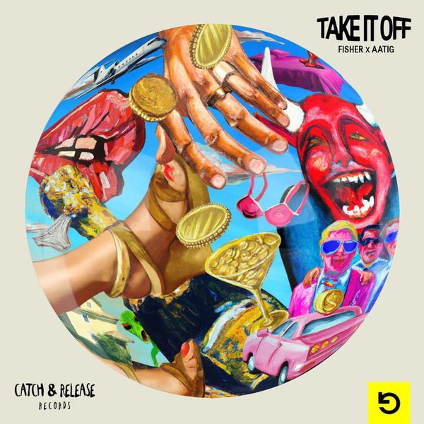

I 18 dischi
 1
Back To LoveLow Steppa feat. Reigns
1
Back To LoveLow Steppa feat. Reigns
 2
SurrenderGoodboys
2
SurrenderGoodboys
 3
Live without love (David Guetta remix)Shouse X David Guetta
3
Live without love (David Guetta remix)Shouse X David Guetta

4 Take It OffFISHER (OZ), Aatig 5
Until The MorningAC Slater & Jay Robinson
5
Until The MorningAC Slater & Jay Robinson
 6
Make This MofoCID
6
Make This MofoCID
 7
RetrosynthDario Nuñez & Alex Now (ES)
7
RetrosynthDario Nuñez & Alex Now (ES)
 8
Party PeopleGene Farris, CASSIMM
8
Party PeopleGene Farris, CASSIMM
 9
DisDavid Novacek, George Cooper
9
DisDavid Novacek, George Cooper
 10
Where You WantRiton, David Guetta, Jozzy
10
Where You WantRiton, David Guetta, Jozzy
 11
OverdriveWankelmut x BELLA X
11
OverdriveWankelmut x BELLA X
 12
CloserBYOR
12
CloserBYOR
 13
Do It To Me (feat. Alimish)MorganJ
13
Do It To Me (feat. Alimish)MorganJ
 14
I Like ThatFOMO
14
I Like ThatFOMO
 15
Fi Dlam LilMarc Benjamin, Zakfreestyler, Roosterjaxx feat. El Kourd
15
Fi Dlam LilMarc Benjamin, Zakfreestyler, Roosterjaxx feat. El Kourd
 16
No Fun (Öwnboss Extended Remix)Armin van Buuren x The Stickmen Project
16
No Fun (Öwnboss Extended Remix)Armin van Buuren x The Stickmen Project
 17
I'll Keep You HighB Jones
17
I'll Keep You HighB Jones
 18
Miracle (ACRAZE Remix)Calvin Harris, Ellie Goulding
18
Miracle (ACRAZE Remix)Calvin Harris, Ellie Goulding
La tracklist
- 1 Back To Love Low Steppa feat. Reigns Armada Music
- 2 Surrender Goodboys Tomorrowland Music
- 3 Live without love (David Guetta remix) Shouse X David Guetta Hell Beach
- 4 Take It Off FISHER (OZ), Aatig Catch & Release
- 5 Until The Morning AC Slater & Jay Robinson Night Bass Records
- 6 Make This Mofo CID Sola
- 7 Retrosynth Dario Nuñez & Alex Now (ES) Hot Fuss
- 8 Party People Gene Farris, CASSIMM Toolroom Records
- 9 Dis David Novacek, George Cooper Darklight Recordings
- 10 Where You Want Riton, David Guetta, Jozzy Atlantic Records UK
- 11 Overdrive Wankelmut x BELLA X HELDEEP Records
- 12 Closer BYOR Smash The House
- 13 Do It To Me (feat. Alimish) MorganJ Mentalo Music
- 14 I Like That FOMO House Call Records
- 15 Fi Dlam Lil Marc Benjamin, Zakfreestyler, Roosterjaxx feat. El Kourd Platonik Recordings
- 16 No Fun (Öwnboss Extended Remix) Armin van Buuren x The Stickmen Project Armada Music
- 17 I'll Keep You High B Jones Tomorrowland Music
- 18 Miracle (ACRAZE Remix) Calvin Harris, Ellie Goulding Columbia